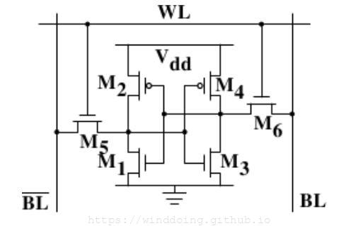
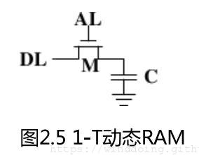
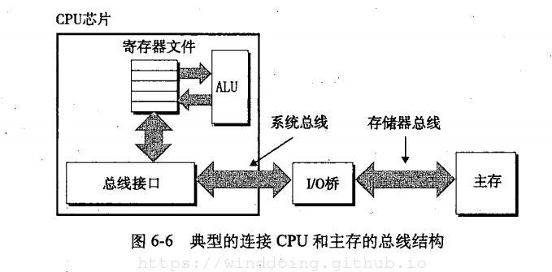
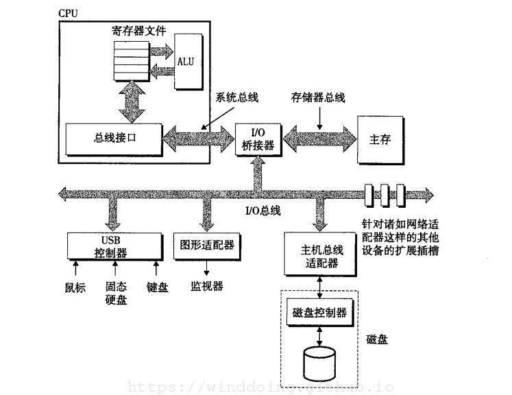
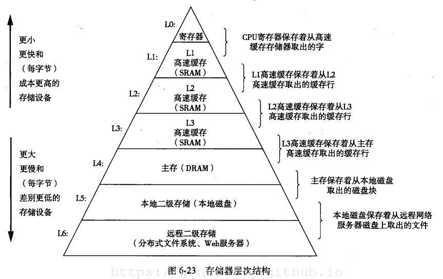
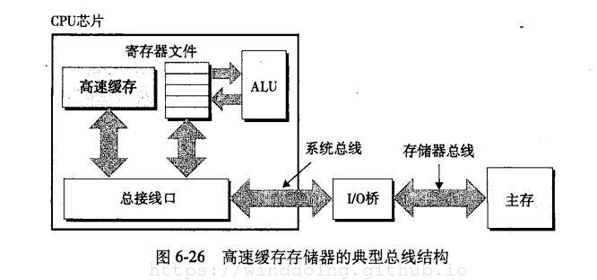
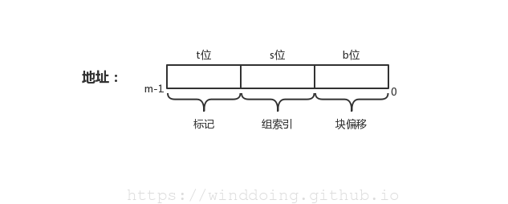
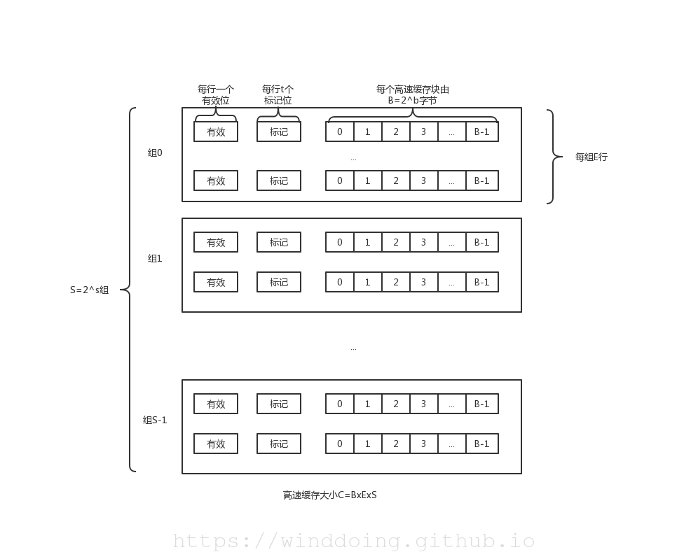
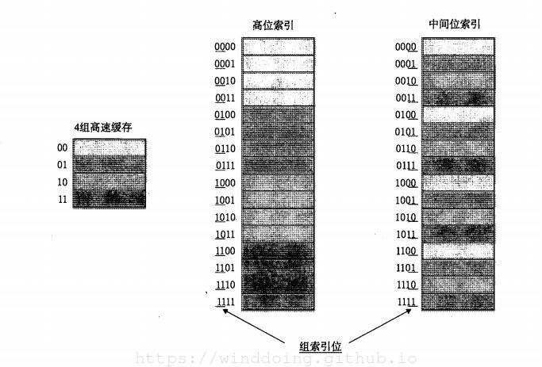
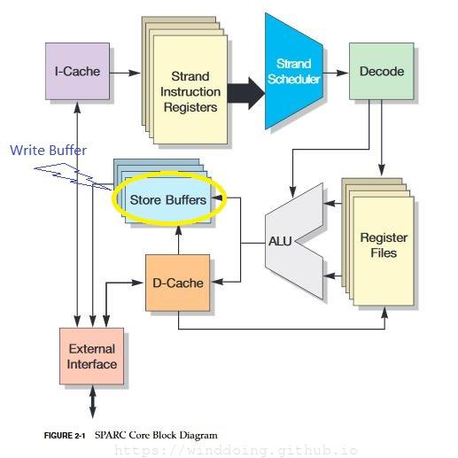

存储器层次结构
内存
- 静态RAM（SRAM）

- 动态RAM（DRAM）

闪存(flash memory):一类非易失性存储器,基于EEPROM(电子可擦除PROM(Electrically Erasable PROM))固件(firmware): 存储在ROM(Read-Only Memory)设备中的程序

- I/O桥的作用—
翻译I/O桥将系统总线（system bus）的电子信号翻译成存储器总线（memory bus）的电子信号
示例：读取内存数据
1 | movl A %eax |
将地址A的内容加载到寄存器%eax中
- CPU将地址A放到存储总线上
- 主存从总线读取A，取出字x，然后将x放到总线上
- CPU从总线上读出字x，并将其拷贝到寄存器%eax中
磁盘存储

读磁盘操作：
- CPU通过命令、逻辑块号和目的存储器地址写到与磁盘相关的存储器映射地址，发起一个磁盘读操作
- 磁盘控制器读扇区，并执行到主存的DMA传送
- 当DMA传送完成时，磁盘控制器用
中断的方式通知CPU
局部性
局部性原理：编写程序时，倾向于引用邻近于其他最近引用过的数据项的数据项，或者最近引用过的数据项本身。
局部性：时间局部性（temporal locality）和空间局部性（spatial locality）
- 时间局部性：被引用过一次的存储位置很可能在不远的将来再被多次引用
- 空间局部性：如果一个存储位置被引用一次，那么程序很可能在不远的将来引用附近的一个存储器位置
局部性原理允许计算机设计者通过引入称为的高速缓存存储器的小而快速的存储器来保存最近被引用的指令和数据项，从而提高对主存的访问速度。
存储器层次结构

缓存
高速缓存（cache）是一个小而快速的存储设备，它作为存储在更大、也更慢的设备中的数据对象的缓冲区域。
缓存（caching）：使用高速缓存的过程
- 缓存命中（Cache Hit）
- 缓存不命中（Cache Miss）
- 覆盖现有缓存的块的过程叫
替换（replacing）或驱逐（evicting） 替换策略（replacement policy）: 最近最少被使用（LRU）替换策略的缓存选择那个最后被访问的时间距现在最远的块
- 覆盖现有缓存的块的过程叫
缓存管理
存储器分层结构的本质: 每一层存储设备都是较低一层的缓存
- L1、L2、L3层的缓存完全是由内置在缓存中的硬件逻辑来管理
- DRAM主存作为存储在磁盘上数据块的缓存，是由
操作系统软件和CPU上的地址翻译硬件(TLB)共同管理
| 类型 | 缓存什么 | 被缓存在何处 | 延迟（周期数） | 由谁管理 |
|---|---|---|---|---|
| CPU寄存器 | 4字节或8字节字 | 芯片上的CPU寄存器 | 0 | 编译器 |
| TLB | 地址翻译 | 芯片上的TLB | 0 | 硬件MMU |
| L1高速缓存 | 64字节块 | 芯片上的L1高速缓存 | 1 | 硬件 |
| L2高速缓存 | 64字节块 | 芯片上/下的L2高速缓存 | 10 | 硬件 |
| L3高速缓存 | 64字节块 | 芯片上/下的L3高速缓存 | 30 | 硬件 |
| 虚拟存储器 | 4KB | 主存 | 100 | 硬件+OS |
| 缓冲区存储 | 部分文件 | 主存 | 100 | OS |
| 磁盘缓存 | 磁盘扇区 | 磁盘控制器 | 100 000 | 控制器固件 |
| 网络缓存 | 部分文件 | 本地磁盘 | 10 000 000 | AFS/NFS客户端 |
TLB: 翻译后备缓冲器（Translation Lookaside Buffer）
- 延迟周期随CPU性能的提高越来越短
高速缓存存储器

通用的高速缓存存储器结构
在CPU中存储器地址线的个数m，将决定其寻址的范围$M=2^m$个不同的地址。
高速缓存主要是将主存中的数据以一定的方式或者策略映射其中，以提高CPU的读写速度，减少数据访问周期。而映射到在Cache中的数据可以被CPU访问同样是通过地址检索，为了提高CPU检索的速度，将地址进行了划分，分成不同的组（Cache set），每个组分成不同行（Cache line）， 每个行分成不同的数据块（block）来提高访问速度。
地址划分如下：

| 类型 | 位宽 | 含义 |
|---|---|---|
| 标记(tag) | t | 用来确定该地址属于哪个高速缓存行（Cache line） |
| 组索引(index) | s | 用来确定该地址属于哪个高速缓存组（Cache set） |
| 块偏移(offset) | b | 用来确定该地址属于高速缓存行中的哪个数据块（block） |
注： m = t + s + b
不同的分类将Cache组织起来，高速缓存（S，E, B, m）的通用组织：

高速缓存是一个高速缓存组（Cache set）的数组，每一个组包含一个或多个行，每个行包含一个有效位、一些标记位、以及一个数据块
高速缓存的大小：
C = S x E x B
相关参数
| 参数 | 描述 |
|---|---|
| $S=2^s$ | 组数 |
| $E$ | 每个组行数 |
| $B=2^b$ | 块大小（字节） |
| $m=log_2(M)$ | (主存物理地址位数) |
| $M=2^m$ | 存储器地址最大数量 |
| $s=log_2(S)$ | 组索引位数量 |
| $b=log_2(B)$ | 块偏移位数量 |
| $t=m-(s+b)$ | 标记位数量 |
| $C=S\times E\times B$ | 不包含有效位和标记位这样开销的高速缓存大小（字节） |
地址检索流程
- 组选择，依据
组索引 - 行匹配，依据
标记位 - 字抽取，依据
块偏移
为什么用中间的位做索引？
如果使用高位做索引，那么一些连续的存储器块就会映射到相同的高速缓存块中

直接映射高速缓存（direct-mapped cache）
每一个组中只有一行高速缓存（E=1）
- 缓存命中（Cache hit）
- 缓存不命中（Cache miss）
- 需要从存储器层次结构中的下一层取出被请求的块，然后将新块存储在组索引位指示的组中的一个高速缓存行中。由于直接映射组中只有一个高速缓存行，因此可以直接替换。
直接映射高速缓存中容易产生
冲突不命中,从而降低高速缓存的性能
组相联高速缓存
每组都保存有多于一个的高速缓存行，一个
1<E<C/B的高速缓存通常称为E路高速缓存
- 缓存命中（Cache hit）
- 缓存不命中（Cache miss）
- 替换策略：
- 最不常使用(Least-Frequently-Used, LFU)
- 最近最少使用(Least-Recently-Used, LRU)
- 替换策略：
全相联高速缓存
由一个包含所有高速缓存行的组（即E=C/B）组成的
因为只有一个组，所以此时就没有组索引位s=
有关写的问题
- 直写(write-through): 就是立即将改动的高速缓存块写回到紧接着的底一层中
- 缺点就是每次写都会引起总线流量
- 回写(write-back): 尽可能的推迟存储器更新，只有当替换算法要替换更新过的块时，才把他写入紧接着的底一层中。
- 缺点增加复杂度，高速缓存必须为每一个高速缓存行维护一个额外的
修改位(dirty bit)，表明这个高速缓存行是否被修改过
- 缺点增加复杂度，高速缓存必须为每一个高速缓存行维护一个额外的
写不命中处理
- 写分配(write-allocate)：加载相应的底一层中的块到高速缓存中，然后更新这个高速缓存
- 非写分配(not-write-allocate)：避开高速缓存，直接把这个字写到底一层中
直写高速缓存通常是非写分配； 回写高速缓存通常是写分配
Write/Store Buffer
现代的处理器往往引入Write/Store Buffer来提升存储系统的性能。Write Buffer的位置位于L1 D-Cache与下一级存储器之间
CPU架构：Open SPARC T1

引入Write Buffer，其优点在于当D-Cache的脏行被替换，数据写回时，此时Cache无需等待可以继续工作，即：其认为数据回写入 Write Buffer即认为此回写操作已完成，无需等待下一级存储器的缓慢响应。Write-through之Cache亦是如此。
高速缓存参数的性能影响
- 不命中率（miss rate）
- 命中率（hit rate）
- 命中时间（hit time）:从高速缓存传送一个字到CPU所需的时间，包括组选择、行确认和字选择时间
- 不命中处罚（miss penalty）